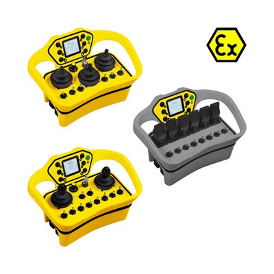

Application graphique de modification d'images (stage)
Stage en cours.
JAY Electronique fabrique des radiocommandes sécurisées pour le milieu industriel. Sur les radiocommandes ci-dessous, vous pouvez observer le "plastron" (il s'agit de la zone où se situent les joysticks).
Il leur manquait un outil pour interagir avec le client au sujet du placement des boutons sur le plastron, ainsi que des textes et icônes permettant de comprendre leur fonction.
Ma mission était donc de comprendre les besoins des clients de l'entreprise, pour leur fournir une application renforçant leur autonomie dans la conception du plastron de leur radiocommande.
Étape 1 : état de l'existant et recueil des besoins
- Recueil des besoins avec les personnes actuellement en charge de la définition des plastrons.
- Analyse des outils existants présentant des similarités avec le projet.
Étape 2 : tests de faisabilité (en cours)
- Tests des fonctionnalités des fichiers SVG et du framework React
- Présentation d'un protoype fonctionnel
Étape 3 : conception des interfaces (à venir)
- Réflexion sur les critères ergonomiques à respecter
- Élaboration de la charte graphique
Étape 4 : première version (à venir)
Étape 5 : ajout de fonctionnalités (à venir)
Outils utilisés
React
C#
Compétences
- Gérer et planifier un projet
- Réaliser une étude de faisabilité
- Apprendre à utiliser un nouvel outil (ici, React)